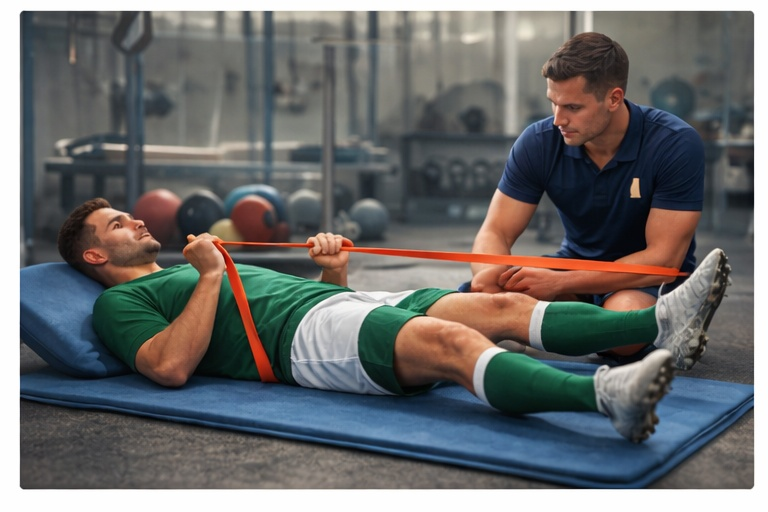
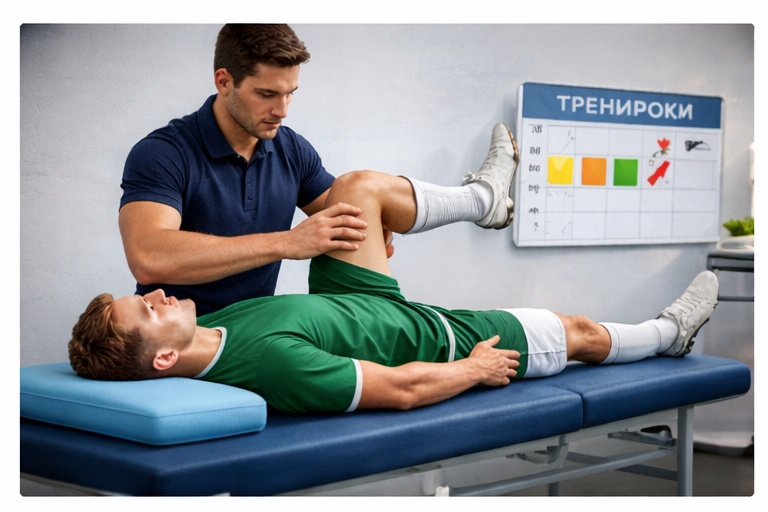

Боль в колене после операции
После хирургического лечения важно правильно пройти этап восстановления.
После операции на колене сустав проходит период адаптации. Слишком ранняя нагрузка или неполная реабилитация могут привести к повторной боли и осложнениям.
Основные причины
Слишком ранняя нагрузка
Возвращение к тренировкам до завершения восстановления увеличивает риск осложнений.
Тканям требуется время для полного восстановления.
Ограничение подвижности
Недостаточная амплитуда движения меняет биомеханику нагрузки на сустав.

Ограничение подвижности увеличивает нагрузку на ткани.
Недостаточное восстановление
Пропуск этапов восстановления может привести к повторной боли.
Регулярные упражнения необходимы для стабилизации колена.
Неполная реабилитация
Отсутствие полноценной программы реабилитации повышает риск рецидива.

Контролируемая реабилитация снижает риск повторной боли.
Другие ситуации с коленом
Правильная реабилитация позволяет безопасно вернуться к активности.
Записаться на консультацию